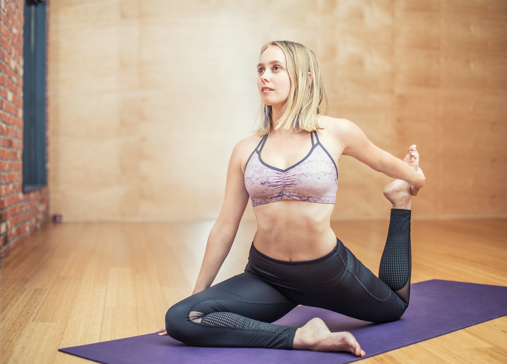

Current pose:
seated One-legged King Pigeon
Adjacent poses:
left-right symmetric
https://en.wikipedia.org/wiki/Eka_Pada_Rajakapotasana

source:
Yoga Journal
http://bhpayne.github.io/yoga_graph/
Ben Payne
ben.is.located AT gmail